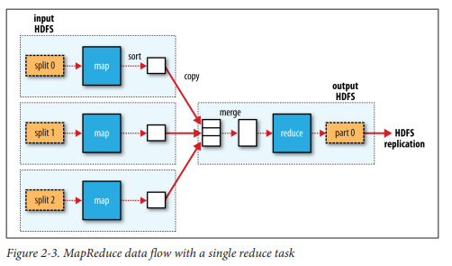

UD03 5. Mapreduce con Python 🐍
¿Qué es MapReduce?
El objetivo de esta guía es trabajar con la resolución de ejercicios siguiendo el modelo de programación MapReduce con Python para entender los principales fundamentos de MapReduce para dar soporte a la computación paralela sobre grandes colecciones de datos en un contexto de procesamiento distribuido.
La mayoría de las tareas de análisis deben poder combinar los datos de alguna manera, y es posible que los datos leídos de un disco deban combinarse con los datos de otros. MapReduce proporciona un modelo de programación que abstrae el problema de las lecturas y escrituras de disco, transformándolo en un cálculo sobre conjuntos de claves y valores. Para ello, MapReduce combina su operatoria en dos partes en el cálculo: el mapeo y la reducción, y es la interfaz entre las dos donde ocurre la "mezcla".
MapReduce es un procesador de consultas batch, con capacidad de ejecutar una consulta ad hoc en todo un conjunto de datos, del orden de los petabytes, y obtener resultados en un tiempo razonable.
Programando MapReduce “Simple”
Ejercicio: Vamos a programar un proceso MapReduce que nos permita realizar un conteo de palabras para saber, en un supuesto dataset del orden de los petabytes, la cantidad de veces que aparece cada palabra.
Vamos a emular el funcionamiento de Hadoop MapReduce en función del siguiente esquema de funcionamiento:

En resumen, en el siguiente ejercicio, vamos a hacer un conteo de palabras en función de la siguiente operatoria:
- Vamos a suponer que tenemos 3 nodos que se distribuyen los datos en 3 split de datos diferentes.
- En cada nodo se va a procesar un split diferente, transformando cada palabra a un par
- Luego, tendremos un sorter.py que ordenará las claves emulando la operación de Hadoop que realiza esta actividad automáticamente.
- Luego habrá un merger que mezclará los archivos procesados en cada nodo emulando a Hadoop que realiza esta operación automáticamente.
- En este ejercicio vamos a suponer que tenemos un único Reducer.
- Por último, habrá un reducer.py que integrará los datos en un único archivo de salida que tendrá el procesamiento final de los datos.
El flujo de datos puede observarse en el siguiente esquema:

1. Mapper
Cada mapper leerá un split de datos y lo procesará. El objetivo de esta actividad es convertir la entrada en un par
- Leemos un fichero línea a línea
- Separamos cada palabra de la línea
-
Imprimimos cada palabra de la siguiente manera:
Palabra
1 Aunque aparezca la misma palabra después, siempre se indicará un uno después del tabulador
-
Código
#!/usr/bin/env python """mapper_simple.py""" # <- Triple comilla, generar documentacion import string file = 'test.txt' f = open(file, 'r') for line in f: # Eliminar espacios iniciales y finales line = line.strip() # Separar línea el palabras words = line.split() # Recorremos las palabras for word in words: print(word, '\t', 1) f.close()
2. Sorter
Una de las operaciones que provee automáticamente Hadoop MapReduce es el sort por claves a la salida de cada nodo.
Nosotros lo programamos puesto que estamos emulando el funcionamiento.
3. Reducer
Ejecutar hadoop mapreducer utilizando los scripts realizados
- En primer lugar, iniciar HDFS y YARN.
- Copiar en la máquina virtual los archivos mapper.py y reducer.py
- Descargar quijote.txt
https://babel.upm.es/~angel/teaching/pps/quijote.txt
- Ejecutar el siguiente comando, vamos a utilizar la utilidad
hadoop-streaming
$ hadoop jar /opt/hadoop/share/hadoop/tools/lib/hadoop-streaming-3.3.6.jar -file mapper.py -mapper mapper.py -file reducer.py -reducer reducer.py -input ../quijote.txt -output /quijote_salida
Error 1:
ERROR streaming.StreamJob: Error Launching job : Input path does not exist: hdfs://debianh:9000/user/quijote.txt
Streaming Command Failed!
-
Sol
Error 2:
Error: Could not find or load main class org.apache.hadoop.mapreduce.v2.app.MRAppMaster
Caused by: java.lang.ClassNotFoundException: org.apache.hadoop.mapreduce.v2.app.MRAppMaster
Please check whether your <HADOOP_HOME>/etc/hadoop/mapred-site.xml contains the below configuration:
<property>
<name>yarn.app.mapreduce.am.env</name>
<value>HADOOP_MAPRED_HOME=${full path of your hadoop distribution directory}</value>
</property>
<property>
<name>mapreduce.map.env</name>
<value>HADOOP_MAPRED_HOME=${full path of your hadoop distribution directory}</value>
</property>
<property>
<name>mapreduce.reduce.env</name>
<value>HADOOP_MAPRED_HOME=${full path of your hadoop distribution directory}</value>
</property>
For more detailed output, check the application tracking page: http://debianh:8088/cluster/app/application_1700062943857_0003 Then click on links to logs of each attempt.
. Failing the application.
-
Sol
Error 3:
-
Sol
Error 4:
FAILED
Error: java.lang.RuntimeException: PipeMapRed.waitOutputThreads(): subprocess failed with code 127
-
Sol
Error 5, problema con el reducer
first line : `#!/usr/bin/python`
second line : `# -*-coding:utf-8 -*`
chmod +x WordCountMapper.py
chmod +x WordCountReducer.py
########### Use this command :
mapred streaming -files WordCountMapper.py,WordCountReducer.py \
-input /data/input/README.TXT \
-output /data/output \
-mapper ./WordCountMapper.py \
-reducer ./WordCountReducer.py
¿Cómo solucionar el Warning?
WARN streaming.StreamJob: -file option is deprecated, please use generic option -files instead.
# Otra llamada con -fles
**hadoop jar $HADOOP_HOME/share/hadoop/tools/lib/hadoop-streaming-*.jar \**
-D stream.num.map.output.key.fields=2 \
-D mapreduce.partition.keypartitioner.options=-k1,1 \
-D mapreduce.job.output.key.comparator.class=\
org.apache.hadoop.mapred.lib.KeyFieldBasedComparator \
-D mapreduce.partition.keycomparator.options="-k1n -k2nr" \
**** -files secondary_sort_map.py,secondary_sort_reduce.py \
-input input/ncdc/all \
-output output-secondarysort-streaming \
**-mapper ch09-mr-features/src/main/python/secondary_sort_map.py \**
-partitioner org.apache.hadoop.mapred.lib.KeyFieldBasedPartitioner \
**-reducer ch09-mr-features/src/main/python/secondary_sort_reduce.py**
Podemos ver el proceso

Funciona
**mapper.py**
#!/usr/bin/env python3
import sys
for line in sys.stdin:
line = line.strip()
words = line.split()
for word in words:
print('%s\t%s' % (word, 1))
####################################################################################
####################################################################################
**reducer.py**
#!/usr/bin/env python3
"""reducer.py"""
import sys
word = None
current_word = None
current_count = 0
# input comes from STDIN (standard input)
for line in sys.stdin:
line = line.strip()
word, count = line.split('\t', 1)
try:
count = int(count)
except ValueError:
continue
# Para que funciona la entrada debe estar ordenada (sort)
# en hadoop funciona directamente porque ya hace un sort
if current_word == word:
current_count += count
else:
if current_word: # Primera iteración es None
print ('%s\t%s' % (current_word, current_count))
current_word = word
current_count = 1
if current_word == word:
print ('%s\t%s' % (current_word, current_count))
####################################################################################
####################################################################################
$ mapred streaming -files mapper2.py,reducer.py -input /quijote.txt
-output /quijote_salida1 -mapper ./mapper2.py -reducer ./reducer.py
$ hadoop jar /opt/hadoop/share/hadoop/tools/lib/hadoop-streaming-3.3.6.jar -file mapper2.py
-mapper mapper2.py -file reducer.py -reducer reducer.py -input /quijote.txt
-output /quijote_salida2
Mejorando MapReducer
1. Mapper
2. Sorter
3. Reducer
Revisar:
- [ ] https://www.michael-noll.com/tutorials/writing-an-hadoop-mapreduce-program-in-python/
- [ ] Runing the phython code in hadoop
- [ ] Se puede acceder desde web a hadoop
- [ ] https://colab.research.google.com/github/bdm-unlu/2021/blob/main/guias/Guia_IntroMapReduce.ipynb#scrollTo=Wc5iyJ0qB8qh
- [ ]
Créditos + Info
https://github.com/bdm-unlu/2023/blob/master/guias/Guia_IntroMapReduce.ipynb